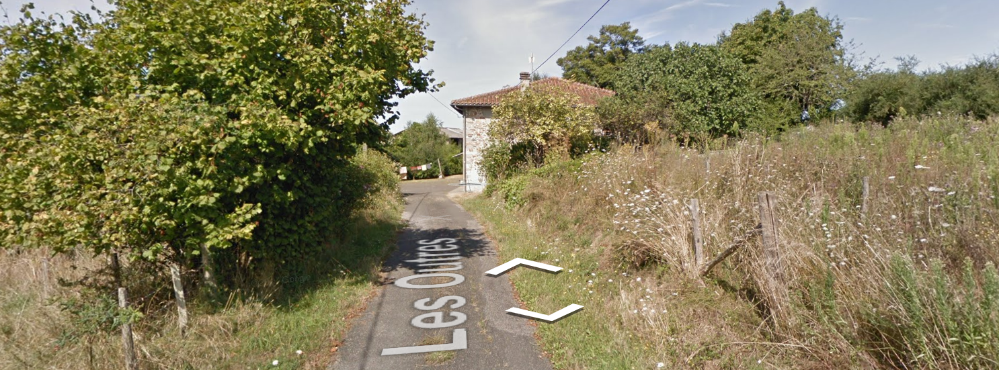
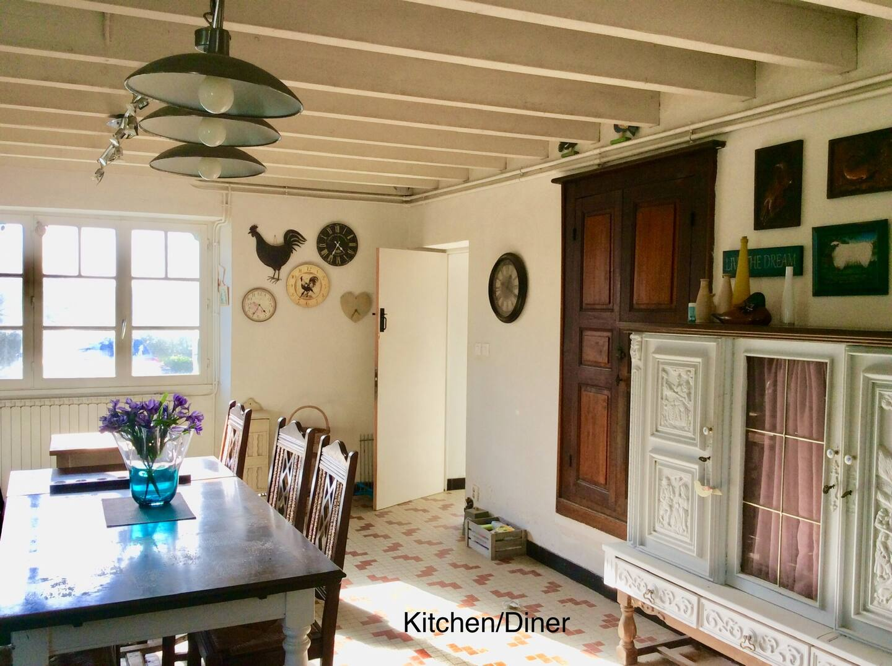
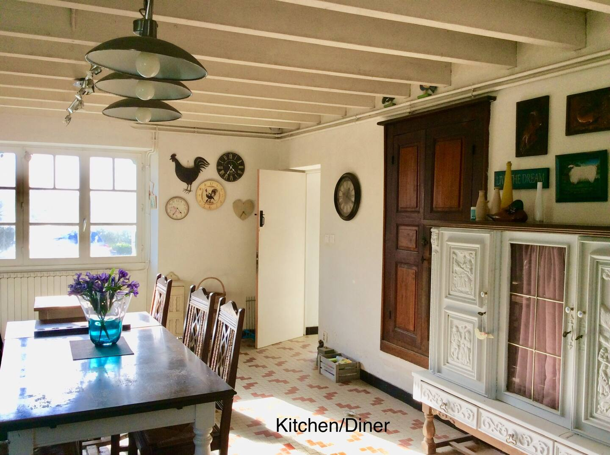
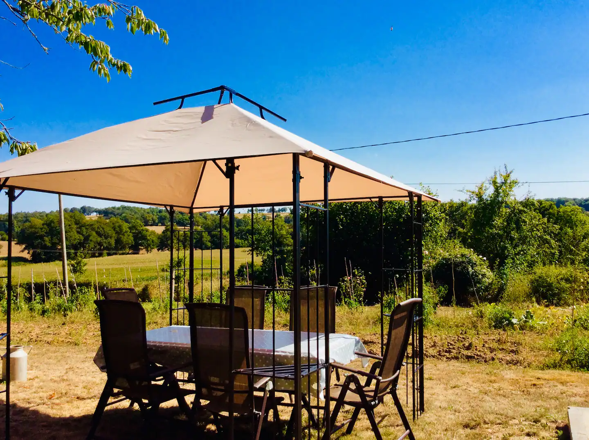
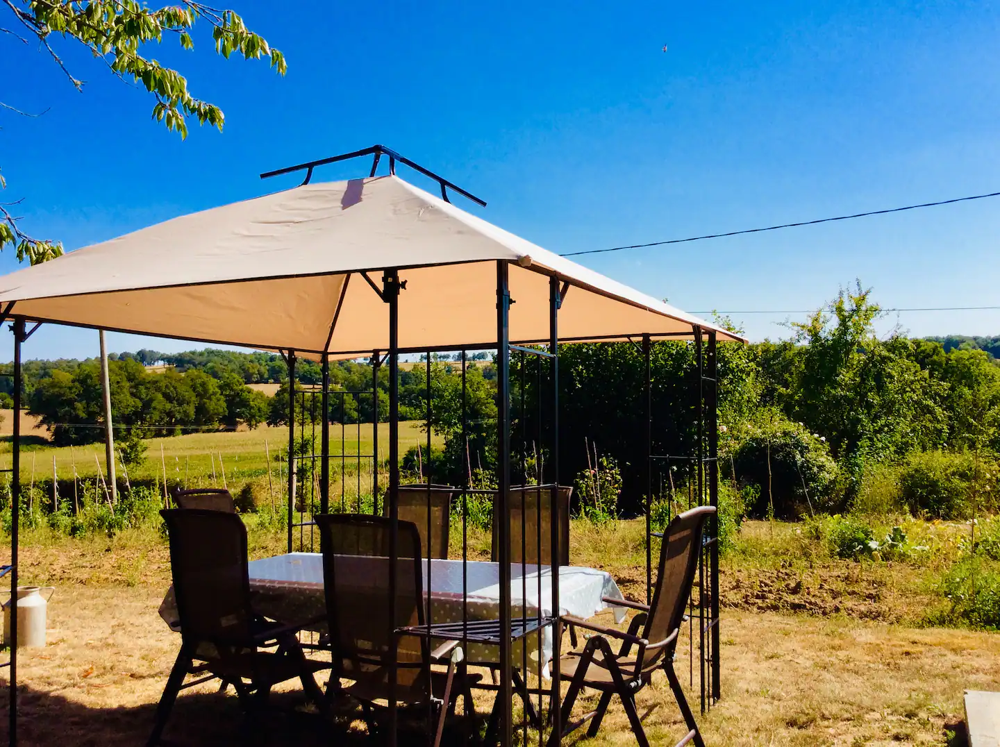

1 151 € pour 6 nuits
144 € par personne pour 6 nuits a 8 personne
Localisation



Position approximative – Clique sur les photos pour zoomer
Carte Google Maps
Galerie du logement (15 photos)
Ce que propose ce logement
Le logement
- Ferme indépendante entièrement rénovée en pierre de la Charente
- Grand jardin privé avec petite piscine
- Barbecue, chaises longues, coin repas extérieur
- Court de boules
- Légumes du jardin en été
- Pack de bienvenue + dîner sur réservation (prix modique)
- Proche des lacs (vélo, sports nautiques, pêche)
- Propriétaires sur place mais séparés (intimité assurée)
Salle de bain
Chambre & Linge
- Lave-linge
- Serviettes, draps, savon, papier toilette
- Cintres
- Fer à repasser
Cuisine & Salle à manger
- Cuisine entièrement équipée
- Four à micro-ondes
- Équipements de base (casseroles, huile, sel/poivre)
- Vaisselle, couverts, bols, assiettes, tasses
Extérieur & Parking
- Brasero
- Mobilier d'extérieur
- Espace repas en plein air
- Barbecue
- Parking gratuit sur place (3 voitures)
- Parking gratuit dans la rue
- Piscine privée
- Entrée privée
Divertissement & Confort
- Télévision
- Chauffage
- Wifi
Sécurité
- Détecteur de fumée
- Détecteur de monoxyde de carbone
- Extincteur
- Kit de premiers secours
Services
- Animaux acceptés (animaux d'assistance toujours OK)
Non inclus
- Pas de sèche-linge
- Pas de climatisation
 



 
